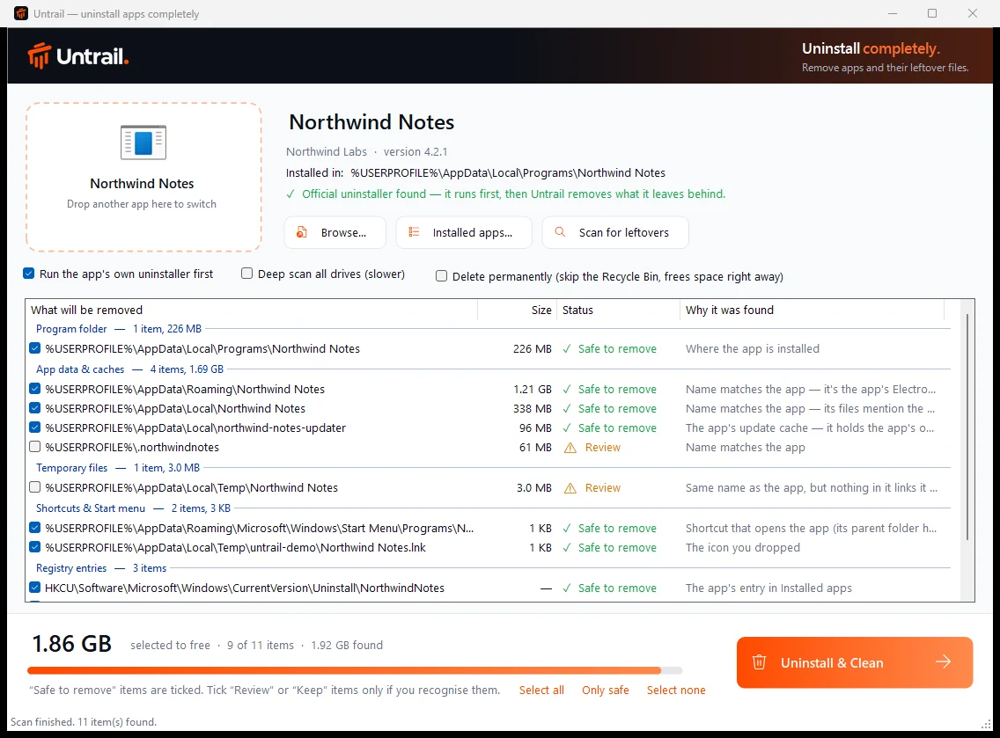
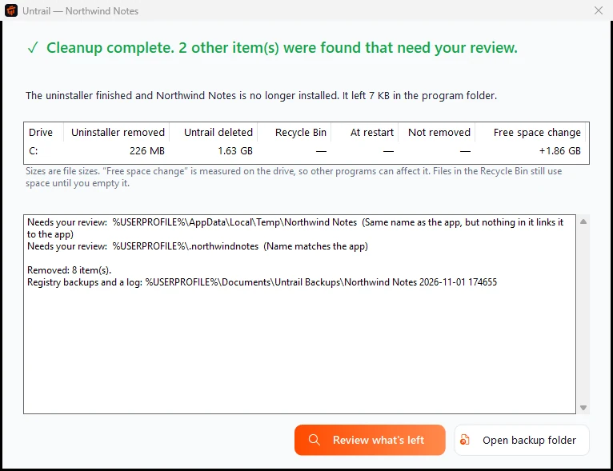

Uninstall apps. Completely.
Untrail runs an app's own uninstaller, then removes the files and registry entries it left behind. It only touches what it can prove belongs to that app.
Uninstallers say they're done. They rarely are.
Most uninstallers delete the program folder and leave everything the app created while you used it: caches and settings in AppData, update downloads, dot-folders, shortcuts, start-up entries and registry keys.
- 226 MB
- removed by the demo app's own uninstaller
- 1.7 GB
- left behind, then found and cleaned by Untrail
How it works
- 1
Drop the app's icon
Drag a shortcut, the app's
.exeor its folder into Untrail, or pick it from Installed apps. - 2
Review what it found
Every item shows its size, a safety rating and why it was found. Only items with evidence are ticked.
- 3
Uninstall & Clean
The app's own uninstaller runs first. Untrail waits until it has really finished, removes what you ticked, then checks again.

A name match is only a hint.
A folder named after the app might belong to another app, or to you. So nothing is ticked without evidence it belongs to the app being removed.
- Safe to remove
Evidence found: the app's own program files, files that mention its install folder, registry settings that point to it, its Electron data folder, or the publisher's own folder.
- Review
Listed with the reason but not ticked: a name match with nothing linking it to the app, untouched since before the install, a common-word name, or a folder that couldn't be read.
- Keep
Never ticked: anything in Documents or Saved Games, which may hold your own files.
When in doubt, it leaves it.
Missing a leftover is a mild annoyance. Deleting something that isn't the app's is not acceptable. Every rule below is enforced in code and tested on every change.
- Waits for the real finish
- Many uninstallers exit early and hand off to a hidden copy. Untrail follows the whole process tree and only continues once the app is really gone. Cancelled or failed means nothing is deleted.
- Every delete is re-checked
- Right before deleting, each item is checked again against a fixed allowlist, the app being removed, and the exact path recorded at scan time.
- Links are never followed
- For junctions and symbolic links, only the link is removed, never its target. A path swapped for a link after the scan is refused.
- Other apps are protected
- Folders that hold another installed app are refused, even from the same publisher. System and top-level folders are always off-limits.
- No backup, no delete
- Registry entries are exported to
Documents\Untrail Backupsfirst. If the backup fails, the entry stays. - Admin only when needed
- Admin rights are requested only for Program Files, ProgramData or machine-wide registry items, through a helper that repeats every check.
Measured, not estimated.
Results are shown per drive: what the app's uninstaller removed, what Untrail deleted, what went to the Recycle Bin or waits for a restart, and the measured change in free space.
Afterwards Untrail scans again, and only says nothing more was found when that scan finished and found nothing.

Built in the open.
- 86
- integration checks on every change, running real deletes against fake apps
- 0
- network connections. Untrail never phones home.
- 0
- SDKs to install. It's built with the C# compiler that ships with Windows.
- MIT
- licensed, with every line on GitHub
Get Untrail.
The latest release, for Windows 10 and 11.
The installer, install notes and the licence.
- UntrailSetup.zip The installer with install notes. Recommended.Download
- UntrailSetup.exe The same installer on its own.Download
- Portable (.zip) No installation: unzip and run
Untrail.exe.Download - SHA256SUMS.txt Checksums for every file in the release.View
"Windows protected your PC"?
Untrail isn't code-signed yet, so SmartScreen may warn the first time you run it. Choose More info, then Run anyway.
Verify your download
Compare the file's SHA-256 with SHA256SUMS.txt:
Get-FileHash .\UntrailSetup.zip -Algorithm SHA256Or confirm it was built by the project's own GitHub workflow:
gh attestation verify UntrailSetup.exe -R usmanmateen/untrailQuestions
Is it safe? It deletes things.
That's why it's careful. Only items with evidence are ticked, everything is re-checked right before it's deleted, links are never followed, registry entries are backed up first, and by default files go to the Recycle Bin.
Which apps does it support?
Desktop apps installed with the usual Windows installers (MSI, NSIS, Inno Setup, Squirrel/Electron and similar), apps with no uninstaller, and Steam games through their shortcuts. Microsoft Store apps and built-in Windows components aren't supported.
Does it need admin rights?
Not to install, and usually not to clean up, because most leftovers live in your own user folder. Untrail asks only when an item is in Program Files, ProgramData or the machine-wide registry.
Does it collect any data?
No. Untrail makes no network connections. Removal logs and registry backups stay on your PC.
How is it different from other uninstallers?
Tools like Bulk Crap Uninstaller and Revo are excellent and do much more. Untrail is deliberately narrow: one app at a time, very conservative about what it deletes, and honest about what it freed.
It missed something, or matched the wrong folder.
Please send a leftover report. Run Untrail.exe --scan "<shortcut>" --hide-user --out report.txt and attach the report.
How do I uninstall Untrail?
Settings, Apps, Installed apps, Untrail, Uninstall. It removes itself completely.